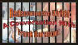

DVD Review Archive
Feature Archive Back Issues Links DVD MIA DVD
Alerts Movie Posters Laser Site Info Home E-mail
© 2002 Films on Disc Stuart J. Kobak ALL RIGHTS RESERVED.
|
|
Quicksand is a lean noir. Auto mechanic Joe Hardy likes the ladies. When a flashy blonde struts behind the counter of a diner where he's catching lunch, Hardy's glib patter secures a late date. Back at the garage, Hardy realizes he he's flat broke and needs to come up with some greenbacks to entertain the lady. One complication leads to another. When you make that first false step into quicksand, getting out is none too easy. Perhaps the script is too predictable and some of the sermonizing regrettable, but Quicksand manages to deliver reasonable "B" entertainment.
Mickey Rooney as the auto mechanic slowly sinking in the
title's proverbial quicksand does a
good job. There's little characteristic mugging or posturing, though his trousers are decidedly too
short. Jeanne Cagney, the younger sister of James Cagney, looks too much like
her brother for my comfort
level. She's not very convincing as the platinum blonde who precipitates Mickey's decent. There are
several other inanely scripted portrayals and Peter Lorre has a role that gives him very
little to do but look quite oily. He does do oily with slick precision.
|
Redeeming
the Writer: 
The Movie Poster Archive includes extensive poster images from the films of stars like Susan Hayward, Kirk Douglas, Katharine Hepburn and many more. Our featured star is Tyrone Power. |